În stînga este slide-ul din curs, în dreapta aceeași figură, calculată în browser din aceleași date. Butonul ▶ modifică parametrul pas cu pas.
De la Markowitz la CAPM · Estimarea lui beta · Testarea CAPM · Modele multifactoriale · Regresii Fama–MacBeth · Factori latenți: PCA și IPCA · Investiții factoriale · AI pentru descoperire științifică
De la Markowitz la CAPM
Frontiera eficientă a sectoarelor din SUA
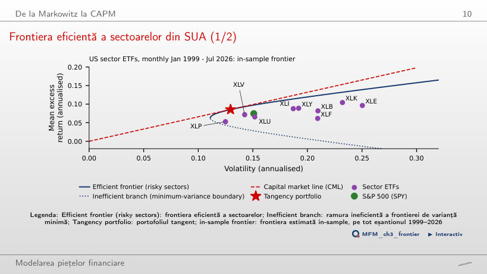
Răspuns
Nu. Cu Mkt-RF ca piață, testul GRS pe cele 9 sectoare dă 0,53, cu p = 0,85. Portofoliul tangent este estimat in-sample și are poziții short mari: −0,37 în XLF și −0,21 în XLB.
Estimarea lui beta
Beta ETF-ului de tehnologie (XLK) în date
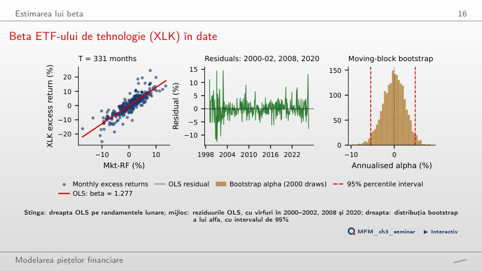
Răspuns
Nu. Erorile HAC schimbă doar erorile standard; estimațiile punctuale rămîn cele OLS. Alfa anual este 0,33%, cu t = 0,13, iar intervalul bootstrap de 95% este [−5,5%; 4,9%], deci alfa nu diferă de zero.
De ce depinde un beta estimat
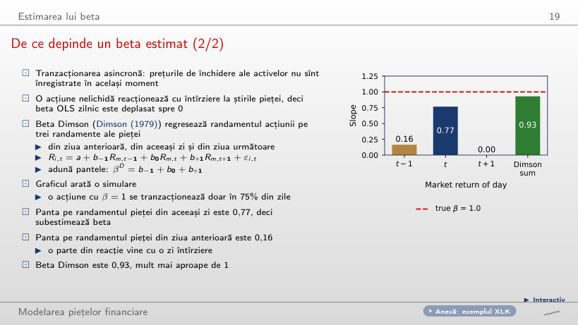
Răspuns
0,77, deci beta este subestimat. Panta pe randamentul pieței din ziua anterioară este 0,16, iar beta Dimson, suma celor trei pante, este 0,93.
Beta nu este constant
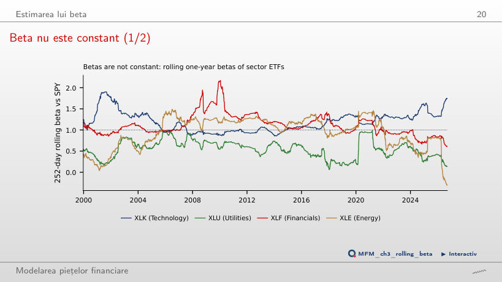
Răspuns
Între −0,31 și 1,49; la sfîrșitul eșantionului este −0,29, pentru că petrolul a evoluat în sens opus pieței. Beta XLF a variat între 0,60 și 2,17, cu maximul imediat după criza bancară din 2008–2009.
Testarea CAPM
Activele de test: 25 de portofolii mărime × B/M
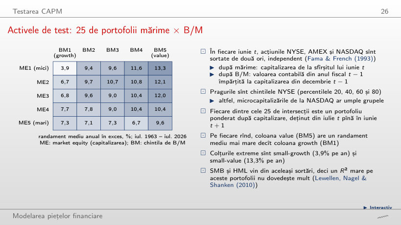
Răspuns
Coloana value (BM5). Colțurile extreme sînt small-growth, cu 3,9% pe an, și small-value, cu 13,3% pe an. Alfa CAPM păstrează aceeași ordine: −6,3% pe an pentru small-growth și +5,7% pentru small-value.
Dreapta pieței titlurilor (SML) în date
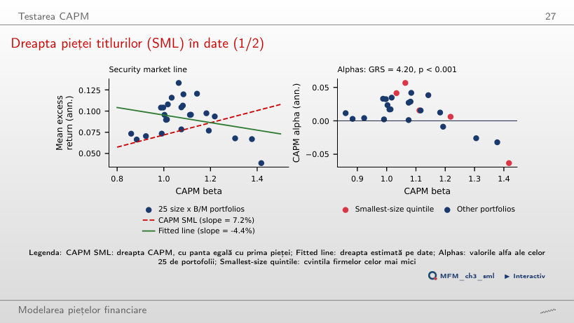
Răspuns
−4,4% pe an: portofoliile cu beta mai mare au randamente medii mai mici. Valorile beta acoperă doar intervalul 0,86–1,42, 10 din 25 de valori alfa au |t| > 1,96, iar GRS = 4,20, cu p = 8 × 10−11.
Modele multifactoriale
Randamentele cumulate ale celor șase factori, 1963–2026
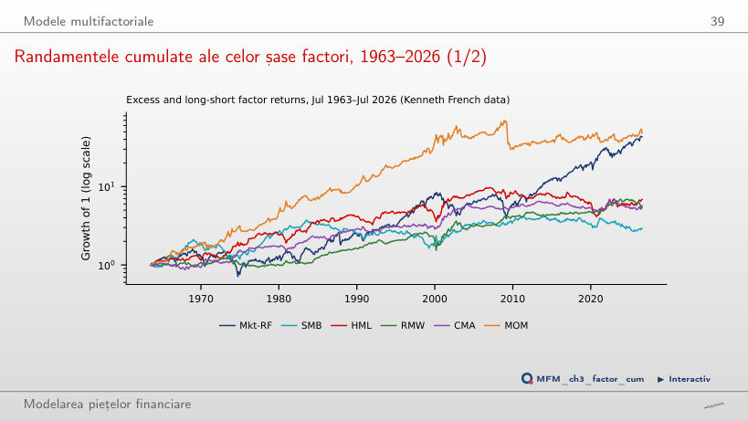
Răspuns
MOM, cu 48,0, urmat de Mkt-RF, cu 43,2. HML ajunge la 6,9, iar SMB la 2,9. Momentum a pierdut mult la revenirea pieței din 2009, iar factorul valoare a stagnat aproximativ din 2007 pînă în 2020.
Regresii Fama–MacBeth
Primele de risc estimate
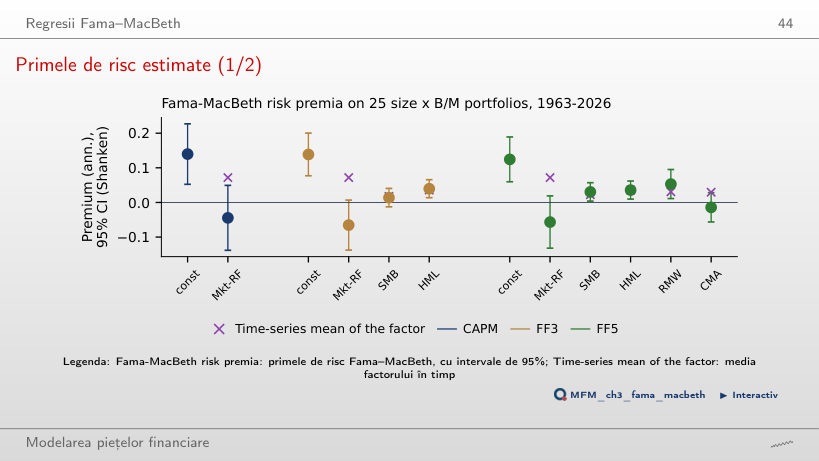
Răspuns
Valorile beta de piață diferă puțin între cele 25 de portofolii (0,89–1,14 în FF3), deci prima pieței este slab identificată, iar termenul liber preia nivelul mediu al randamentelor. Pentru HML, prima estimată (4,0%) este apropiată de media factorului (3,6%).
Factori latenți: PCA și IPCA
PCA pe ETF-urile sectoriale din SUA
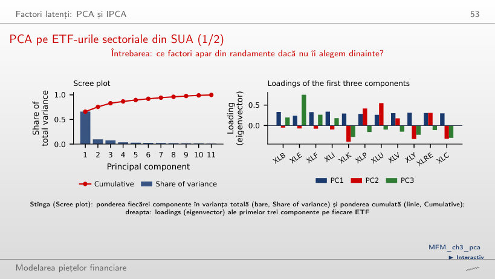
Răspuns
66,0%. Loadings sînt toate pozitive (0,24–0,34), iar corelația PC1 cu SPY este 0,954. PC2 (9,7%) opune sectoarele defensive, de exemplu utilitățile (+0,55), sectoarelor de creștere, de exemplu tehnologia (−0,40).
Investiții factoriale
ETF-urile factoriale față de piață
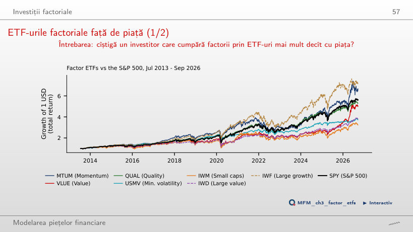
Răspuns
Doar IWF (16,3%) și MTUM (15,5%), față de 14,0% pentru SPY. QUAL are 13,5%, VLUE 13,1%, IWD 10,7%, USMV 10,5% și IWM 9,3%. Treisprezece ani reprezintă o singură traiectorie istorică, prea scurtă pentru a respinge primele factorilor.
AI pentru descoperire științifică
Ministudiu de caz: arbitrajul și declinul momentum-ului
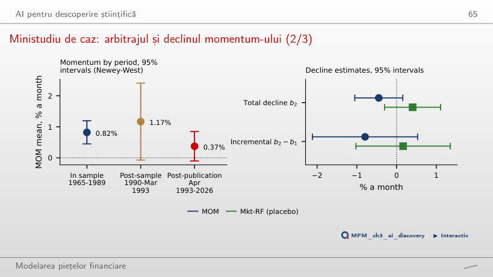
Răspuns
Nu: t = −1,45, iar intervalul de 95% este [−1,05%; 0,16%]. Scăderea reprezintă 54% din media in-sample de 0,82% pe lună, apropiată de 58% în McLean și Pontiff (2016). Pentru Mkt-RF (placebo), b₂ = +0,40%, cu t = 1,12.
ETF-uri din SUA: prețuri EODHD ajustate pentru dividende; randamentele în exces folosesc rata fără risc din Kenneth French Data Library. Factorii Fama–French, momentum și cele 25 de portofolii mărime × B/M: Kenneth French Data Library. Beta Dimson: date simulate.